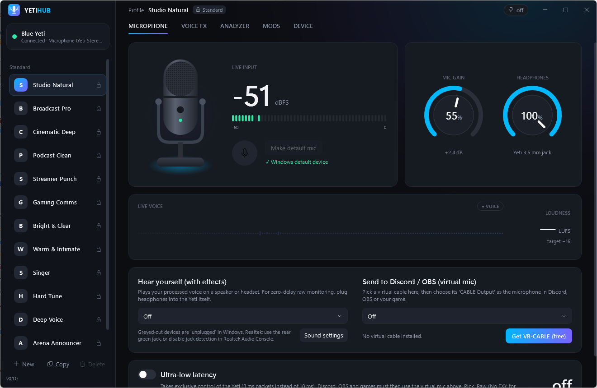
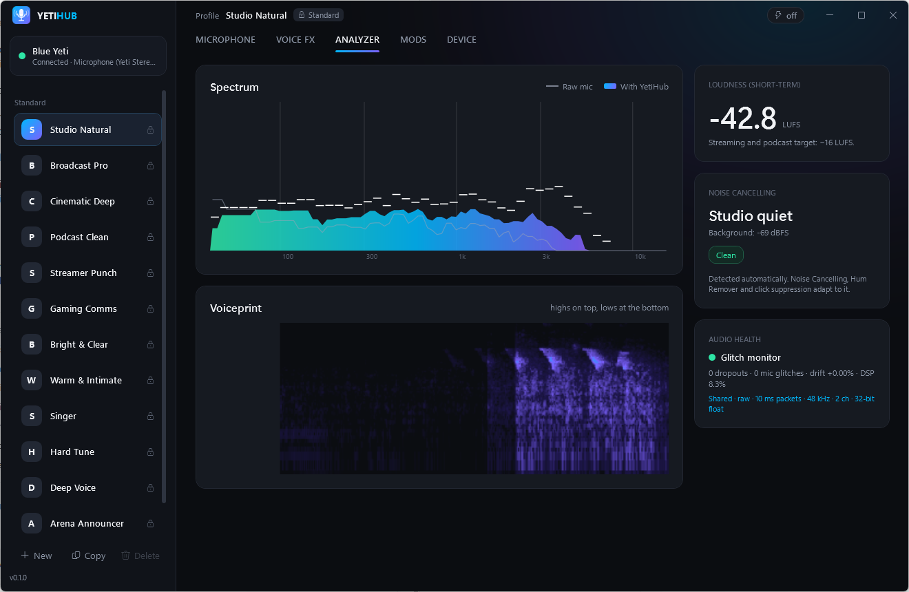

🔇 Noise cancelling
Learns your room, removes fans, hiss, hum and keyboard clicks, and tells you what it found.
🎚️ 17-stage Voice FX
EQ, compressor, de-esser, auto level, warmth, exciter, reverb, limiter: a full broadcast chain.
🎵 AutoTune
Real-time pitch correction, Hard Tune, pitch shift and voice changer effects.
⚡ ~20 ms latency
Custom WASAPI engine with adaptive drift correction and a live glitch monitor.
📊 Live analyzers
Spectrum, voiceprint spectrogram, waveform and an EBU-style LUFS loudness meter.
🗂️ 13 tuned profiles
Broadcast, Podcast, Streamer, Gaming, Cinematic and more, plus your own copies.
Install in 2 minutes
- Download YetiHub-win-Setup.exe.
- Run it. If SmartScreen appears, click More info → Run anyway (the installer isn't code-signed yet).
- Plug in your Blue Yeti: it's detected automatically.
- Pick a profile like Broadcast Pro. Done.
- For Discord/OBS: install the free VB-CABLE, select CABLE Input in YetiHub, and choose CABLE Output as your mic.

Blue Yeti not showing up in Logitech G HUB?
The original Blue Yeti runs on Microsoft's built-in USB audio drivers, so there's nothing to "install". G HUB simply stopped listing it. YetiHub detects it directly over USB and adds the processing G HUB and Blue VO!CE never had.